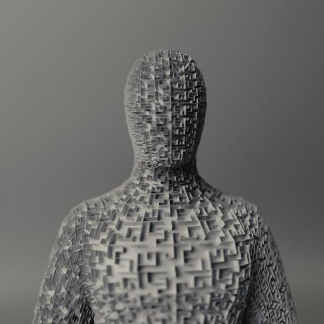

👜 Experience
- Simulations Engineer | Delft Aerospace Rocket Engineering (2022-present)
- Developing the in-house rocket trajectory simulation software in the Rust programming language, used in performance evaluations and landing zone prediction of the Stratos V rocket.
- Structural Engineer | Delft Aerospace Rocket Engineering (2022-2023)
- Designing the composite airframe and cryogenic propellant tanks for the Stratos V reusable space-shot rocket.
- Assistant Tutor | Stichting Studiebegeleiding Leiden (2021-2022)
🎓 Education
- MSc Aerospace Engineering, Control & Simulations Track | TU Delft (2024-2027)
- Minor in Engineering with AI | TU Delft (2023-2024)
- Subjects included Natural Language Processing, Deep Learning and AI Ethics. Finished the minor with a final grade of 9.1/10.
- BSc Aerospace Engineering | TU Delft (2021-2024)
- Followed 20+ courses on Structural mechanics, Aerodynamics, Artificial intelligence, Computational modeling, Numerical analysis & Systems engineering.
- GPA of 8.1/10.
- International Baccalaureate | Portus Groene Hart (2019-2021)
🔬 Skills
- Technical Knowledge: Machine learning (AI), Mathematical modeling, Technical problem solving.
- Programming: Python, Rust, C++, Git, $\LaTeX$.
- Languages: Dutch (Native), English (Bilingual).
📄 Certificates
- Cambridge Certificate of Proficiency in English